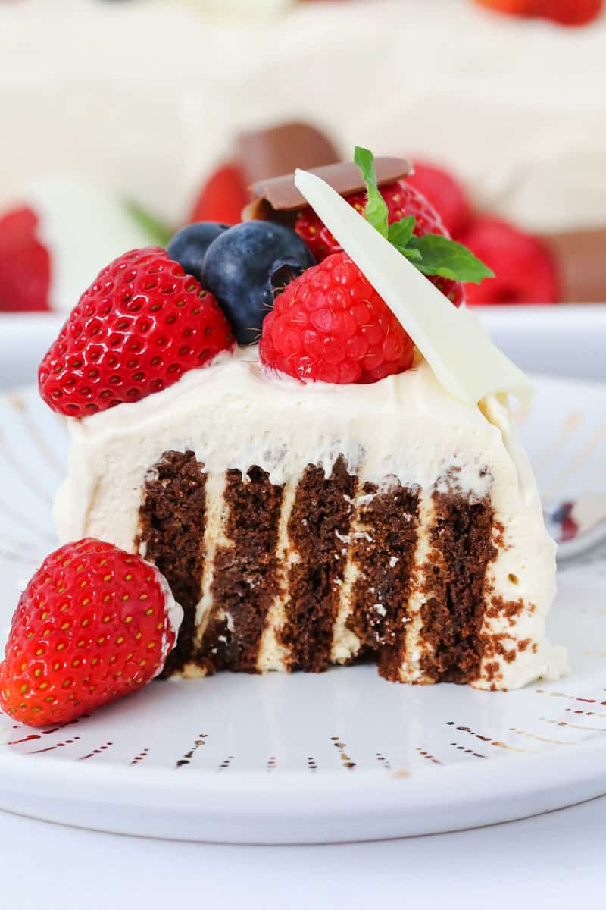

Baileys Chocolate Ripple Cake

The ultimate Baileys Chocolate Ripple Cake decorated with fresh berries and chocolate.... this simple dessert takes just 10 minutes to prepare and is the perfect no-bake 'adults-only' recipe!
Ingredients:
- 600 ml cream thickened or whipping
- 100 ml Baileys Irish Cream
- 250 g Arnott's Choc Ripple biscuits or any plain sweet chocolate cookies
- fresh berries, chocolate and fresh mint leaves to decorate
Steps:
- Place the cream in a bowl and beat with handheld beaters or a stand-mixer until soft peaks form.
- Add the Baileys Irish Cream and gently beat through until combined.
- Spread some of the whipped cream along the base of your serving dish.
- Hold one chocolate ripple biscuit in your hand. Spread a teaspoon of whipped cream onto the flat edge and place another chocolate ripple biscuit on top. Repeat until you have a stack of 3-4 biscuits in your hand.
- Place the stack standing upright onto the cream on the serving plate. Repeat with another 3-4 biscuits and then join that stack to the serving platter to form one long log.
- Repeat until all of the biscuits have been used.
- Use the remaining whipped cream to spread over the entire outside of the log.
- Chill in the fridge.
For best results, place log in the fridge overnight before serving (as this will allow the biscuits to soften).
- Decorate with fresh berries, chocolate (see notes) and fresh mint leaves.
Go back home